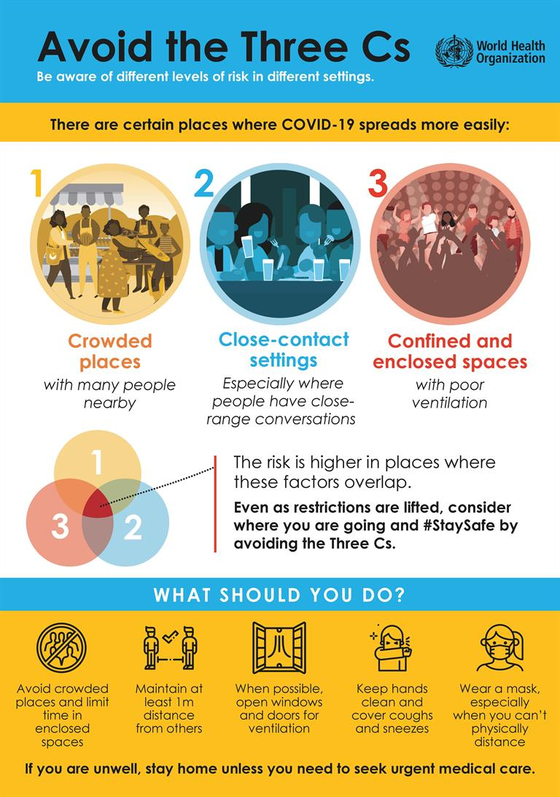

Before preventing the coronavirus, how the coronavirus infects and works is also very important. The SARS-CoV-2 virus is a type of coronavirus. Usually coronaviruses infect various animals, and they can cause severe respiratory infections in humans. SARS and MERS are all types of coronaviruses including COVID-19. After the COVID-19 outbreak in China, scientists discovered that there was a new type of betacoronavirus, which is the SARS-CoV-2 virus. The scientists discovered that the SARS-CoV-2 virus is very closely related with SARS and MERS. The main problem is that the immune system does not respond to the virus, so the virus can invade the human body. The virus damages the entire human body including the respiratory system, cardiovascular system, the nervous system, the digestive system and so on. Some patients of COVID had dry eyes, blurred vision, foreign body sensation and conjunctivitis with conjunctival congestion. Other symptoms may include: fever, chills, coughing, difficulty breathing, fatigue, body aching, headache, loss of taste or smell, a sore throat, runny nose, nausea, vomiting and diarrhea. You should go consult your doctor as soon as you have these symptoms.
